Module 8—Acid-Base Equilibrium
 Self-Check Answers
Self-Check Answers
Contact your teacher if your answers vary significantly from the answers provided here.
SC 3.
Test the following assumption:
- 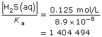
This value is greater than 1000, so the approximation is valid. As a result, the change in the concentration of hydrosulfuric acid due to its ionization is very small, and the equilibrium concentration of hydrosulfuric acid is assumed to be 0.125 mol/L.
Let x = [H3O+(aq)]. Therefore,
x = [HS–(aq)]
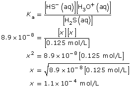
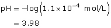
SC 4.
Practice 5.
- 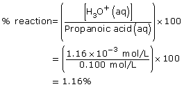
Amount Concentration
[C2H5COOH(aq)]
(mol/L)[C2H5COO–(aq)]
(mol/L)[H3O+(aq)]
(mol/L)Initial
0.100
0
0
Change
–1.16 × 10–3
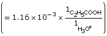
+1.16 × 10–3
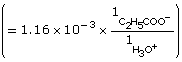
+1.16 × 10–3
Equilibrium
0.099
1.16 × 10–3
1.16 × 10–3
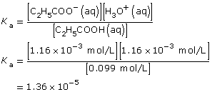
- As with all equilibrium constants, the value is only constant at the temperature at which the data were collected.
Practice 6.
- 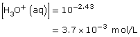
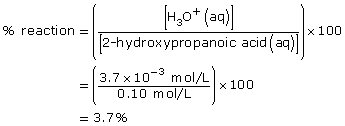
| Amount Concentration | [C2H5OCOOH(aq)] |
[C2H5OCOO–(aq)] |
[H3O+(aq)] |
Initial |
0.10 |
0 |
0 |
Change |
–3.7 × 10–3 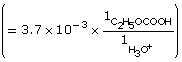 |
+3.7 × 10–3 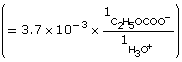 |
+3.7 × 10–3 |
Equilibrium |
0.10 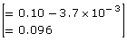 |
3.7 × 10–3 |
3.7 × 10–3 |
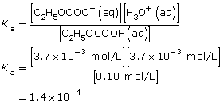
- The addition of the hydroxyl group increases the Ka by a factor of 10. Therefore 2–hydroxypropanoic acid ionizes ten times more than propanoic acid.